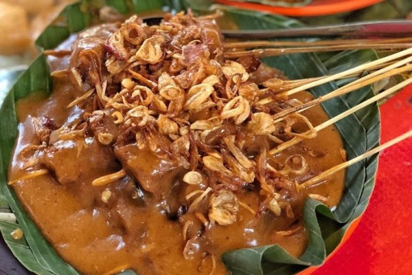

Sate Padang
Diposting pada 11.04 WIB, 20 Maret 2023
Sate Padang digemari masyarakat indonesia karena memiliki cita rasa gurih, pedas, dan penuh bumbu rempah yang membuatnya semakin istimewa. Tekstur kuah sate Padang yang khas juga menjadi pembeda dari jenis sate lainnya. Sate Padang bisa dibuat dari daging ayam, sapi, hingga jeroan. Konon menurut sejarahnya, sate Padang ternyata sudah ada sejak zaman peperangan dulu. Makanan yang biasanya berbahan dasar daging sapi, lidah sapi, dan jantung sapi ini dipercaya berasal dari Padang Panjang, Sumatra Barat. Kemudian sate Padang ini terus mengalami perkembangan dan dikenal semakin luas karena dibawa oleh beberapa peziarah dan santri yang belajar mengaji ke salah satu wilayah yang cukup populer sebagai pusat pendidikan agama Islam di Sumatera Barat pada masa itu yaitu Pariaman.
Selengkapnya